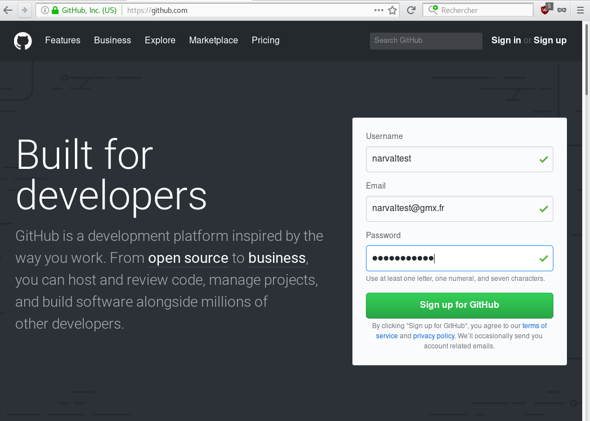
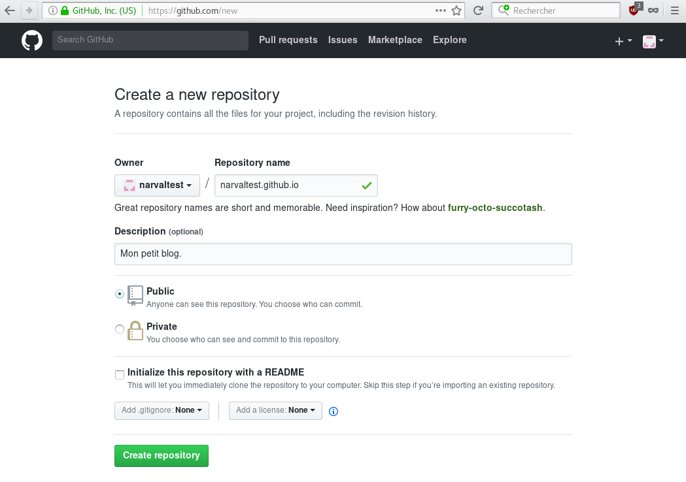

Publier son blog sur Github
Voyons ici comment mettre en ligne son blog Narval sur les serveurs de Github.
1. Git
Github fonctionne avec Git qui est un logiciel de gestion de versions décentralisé. Avec cet outil, il est possible de gérer facilement les versions d’un dossier et son contenu. Cela n’est pas très utile pour ton blog, mais Github est à la base fait pour les développeurs ayant besoin de ce genre d’outil. Narval ne permet d’ailleurs pas de gérer les versions de ton blog, puisqu’il écrase tous les fichiers à chaque fois que tu reconstruis ton blog avec la commande python3 build.py. Ce n’est pas un problème, car si tu souhaites versionner ton blog, il convient plutôt de le faire sur le dossier content/, mais ne nous égarons pas.
Tu as donc tout d’abord besoin de Git. Si tu l’as déjà, la commande git --version dans un terminal affichera le numéro de version. Sinon, cette page indique la marche à suivre pour l’installer.
2. Github
Inscription sur Github
C’est ici que l’inscription se passe : https://github.com/.
L’inscription est facile, mais il faut faire attention à une chose : le nom d’utilisateur choisi figurera dans l’adresse URL du blog(https://username.github.io). Choisis donc bien ton nom d’utilisateur. Il te sera demandé si tu veux un compte gratuit ou payant. Le compte gratuit est suffisant pour l’usage que tu en auras et, si besoin, tu pourras passer à un compte payant plus tard sans soucis.

Création d’un nouveau dépôt
Une fois inscrit et connecté, tu crées un nouveau dépôt qui accueillera les fichiers et dossiers de ton blog. Pour ce faire, clique sur « Start a project » ou « New repository ».
Le nom du dépôt se compose de ton nom d’utilisateur suivi de « .github.io ». Dans le champ « Repository name » indique donc « username.github.io ».
Voilà, tu peux alors laisser le reste tel quel et cliquer sur « Create repository ». Facile !

3. Blog
Dans le dossier content/ de ton blog se trouve le fichier CONFIG. Pour la clef url, met la valeur https://username.github.io si ce n’est pas déjà fait.
Ensuite, il faut générer le blog avec la commande python3 build.py (voir la documentation si besoin).
Enfin, il faut se placer dans le dossier du blog généré (pas le -local, l’autre qui porte le même non, sans le suffixe « -local ») et saisir plusieurs commandes dans le terminal :
git init, qui permet d’initialiser Git dans le dossier du blog à mettre en ligne;git add ., pour prendre en charge tous les fichiers du blog dans le versionnage;git commit -m "maj", pour réaliser une version avec un message à choisir (ici « maj », mais ce message n’a aucune importance dans notre cas);git remote add origin https://github.com/username/username.github.io.git, pour que les enregistrements se fassent au bon endroit sur Github;git push -u origin master, pour mettre en ligne la ou les versions créées précédemment.
Suite à cette dernière commande, il te sera demandé ton nom d’utilisateur, puis ton mot de passe Github.
Cette série de commande n’est pas à resaisir dans son intégralité à chaque fois qu’un nouvel article est à publier, car Narval conserve l’initialisation de git et est toujours synchronisé avec Github (à moins que tu aies supprimé le dossier généré manuellement, ce qui est déconseillé, car peu pratique). Du coup, pour chaque nouvel article, voici ce qu’il faut saisir dans le dossier fraîchement regénéré :
git add .;git commit -m "maj";git push origin master.
Une prochaine mise à jour permettra la publication directe du blog, dès sa génération. Cela permettra de ne plus avoir à saisir ces 3 commandes dans le dossier généré.
Félicitations, ton blog est en ligne !